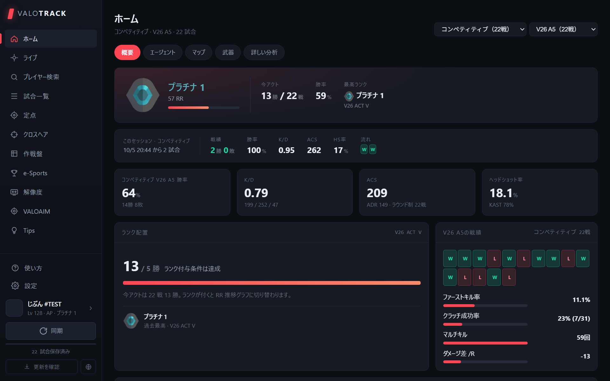
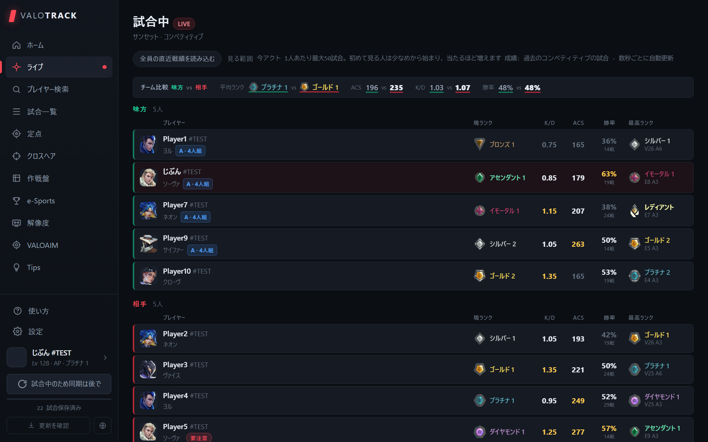

VALORANT の戦績を、
自分の PC で。
Your VALORANT stats,
right on your PC.
試合中の全員のランク、エージェント選択中の味方の戦績、試合ごとのふりかえり、引き伸ばし解像度の自動切り替えまで。ブラウザを開かずに、ひとつのアプリで。 Everyone's rank in your match, your teammates' stats during agent select, a review of every game, and automatic stretched resolution — all in one app, no browser needed.

できることWhat it does
試合の前・最中・後まで、必要な数字をすぐ出します。The numbers you need before, during and after every match.
ホームでまとめて確認Everything on Home
ランクと RR、このセッションの成績、勝率・K/D・ACS・HS率。モードとアクトで絞り込めて、モードをまぜた数字は出しません。 Rank and RR, this session, win rate, K/D, ACS and HS%. Filter by mode and act — modes are never mixed together.
ライブ：試合中の全員Live: everyone in your match
10 人の現ランク・最高ランク・直近の K/D や勝率、組んで来ているパーティまで。チームの平均も比べられます。 Current and peak rank, recent K/D and win rate for all 10 players, plus who is queuing together. Compare team averages at a glance.
ピック中のオーバーレイAgent-select overlay
エージェント選択の間だけ、ゲーム画面の上に味方の戦績を表示。ドラッグで好きな位置へ動かせます。 During agent select only, your teammates' stats appear over the game. Drag it wherever you like.
試合ごとのふりかえりReview every match
ふだんの自分と比べて、直すことと、できていたことを具体的に。ラウンドの流れや倒されたタイミングも見られます。 Compared with your usual self: what to fix and what went well, plus the round flow and when you died.
引き伸ばし解像度Stretched resolution
4:3 などへの切り替えをワンクリックで。VALORANT の起動・終了に合わせて自動で切り替え、彩度も一緒に変えられます。 Switch to 4:3 and more in one click — or automatically when VALORANT starts and exits, with vibrance switched too.
Discord に表示Discord status
「VALOTRACK をプレイ中」として、モード・マップ・スコア・ランクを Discord のプロフィールに出せます。 Show your mode, map, score and rank on your Discord profile as "Playing VALOTRACK".
ほかにも 定点・クロスヘア・作戦盤・プレイヤー検索・e-Sports・エイム練習（VALOAIM） など。日本語 / English に対応。 Also lineups, crosshairs, a strat board, player search, e-Sports and an aim trainer (VALOAIM). Available in Japanese and English.
画面Screenshots

入れ方How to install
ダウンロードDownload
「ダウンロード」から VALOTRACK-Setup.exe を保存します。 Save VALOTRACK-Setup.exe from the Download button.
インストーラーを実行Run the installer
「Windows によって PC が保護されました」と出たら、「詳細情報」→「実行」を押してください（署名の無い個人製作のアプリのため出ます）。 If "Windows protected your PC" appears, click "More info" → "Run anyway" (it shows because this is an unsigned indie app).
VALORANT を起動して開くStart VALORANT and open it
Riot クライアントにログインした状態で VALOTRACK を開くと、試合が自動で取り込まれます。 Open VALOTRACK while signed in to the Riot Client and your matches are imported automatically.
更新履歴Changelog
アプリは新しい版が出ると自動で知らせます。The app tells you automatically when a new version is out.
よくある質問FAQ
無料ですか？Is it free?
はい、無料です。Yes, it's free.
戦績のデータはどこに保存されますか？Where is my data stored?
自分の PC の中だけです。VALOTRACK 独自のサーバーはなく、戦績をどこかへ送ることもありません。 Only on your own PC. VALOTRACK has no servers of its own and does not upload your stats anywhere.
ゲームやアカウントに影響はありますか？Does it touch the game or my account?
ゲームのファイルやメモリには触れず、Riot クライアントが PC の中で使っている情報を読み取るだけです（解像度タブを使った時だけ、VALORANT の設定ファイルの解像度を書き換えます）。ただし Riot Games 公式のツールではないため、ご利用は自己責任でお願いします。 It does not touch the game's files or memory — it only reads information the Riot Client uses on your PC (the Resolution tab also changes the resolution in VALORANT's config file, only when you use it). It is not an official Riot Games tool, so use it at your own risk.
更新はどうすればいいですか？How do I update?
新しい版が出ると、アプリの上に知らせが出ます。「更新する」を押すとインストーラーが開きます。 When a new version is out, a banner appears at the top of the app. Click "Update" to open the installer.
前の版に戻したいですI want to go back to an older version
リリースの一覧から、前の版のインストーラーを入れ直してください。保存してある戦績はそのまま残ります。 Reinstall an older installer from the releases page. Your saved stats stay as they are.